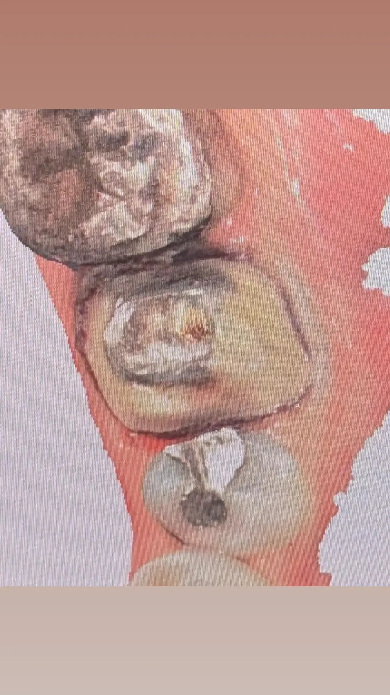

نسخه استخراجشده؛ ترجمه یا تأیید علمی انجام نشده است. وضعیت: captured
دندانی با ترمیم آمالگام برای روکش آمده است؛ فرقی نمیکند آمالگام را خودت گذاشته باشی یا کس دیگری. تصمیم به روکش گرفته شده و سر تراش هستی. حین تراش میبینی در یکی از پروگزیمالها هنوز بافت پوسیده باقی مانده و جا گذاشته شده است. حالا چه تصمیمی میگیری؟

اینکه این بیمار و این دندان اصلاً کاندید روکش هستند یا نه، بحث جداگانهای است و اینجا کاری به آن نداریم. سؤال فقط این است که با پوسیدگی جامانده چه کنی.
نکتههای تجربی سر یونیت، که محصول کار بالینی واقعیاند نه ورکشاپ و تئوری، کیفیت ختم تراش را قابلپیشبینیتر، تمیزتر و استانداردتر میکنند. این درس با یکی از همین تصمیمهای سر تراش شروع میشود.
خارج کردن کل آمالگام بیهزینه نیست. خود این خارج کردن میتواند آسیبزننده باشد و مشکلات بعدی بسازد: نسج سالم اطراف را درگیر میکند و پایهای را که هنوز کار میکرد خراب میکند. گاهی ضرر برداشتن آمالگام از حفظش بیشتر است.
در مقابل، گذاشتن باکس برای حذف آن پوسیدگی کاری خارج از چهارچوب تراش روکش نیست. باکس پروگزیمال بخشی از خود پروتکل تراش روکش است و چیز عجیب یا فراتر از روال به حساب نمیآید. پس پوسیدگی برداشته میشود، بیآنکه مجبور شوی پایهی سالم را بیجهت خراب کنی؛ درمانی که در مسیر طبیعی کار جا میشود.
ملاک تصمیم، وسعت پوسیدگی جامانده است، نه عادت همیشگی به برداشتن کل ترمیم قدیمی. «همیشه ترمیم قدیمی را کامل بردار» عادت است، نه قاعده؛ در پوسیدگی محدود، خارج کردن کل آمالگام میتواند بیش از آنکه کمک کند آسیب بزند.